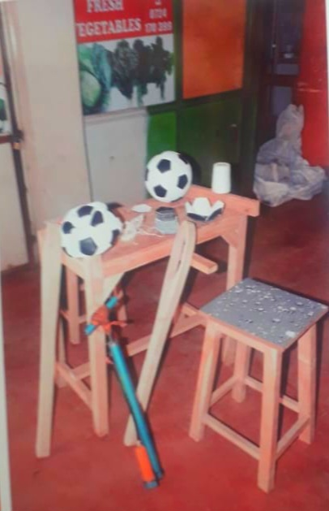

The Kiambu Integrated Rescue Disabled Organisation (KIRDO) has left an indelible mark in the lives of disabled individuals, offering hope, support, and opportunities for empowerment. Through its tireless efforts and unwavering commitment, KIRDO has significantly improved the quality of life for the disabled community in Kiambu and beyond.
Beyond its direct impact on individuals, KIRDO's work has ripple effects that extend to families, communities, and society as a whole. By promoting social inclusion and economic participation, KIRDO contributes to the overall well-being and prosperity of society, creating a more equitable and inclusive future for all.

Join us in lending a helping hand to KIRDO and be a part of the transformative impact it brings to the lives of disabled individuals. Together, we can create a brighter future and build a world where everyone, regardless of ability, has the opportunity to thrive and fulfill their potential. Let's make a difference, one act of kindness at a time.